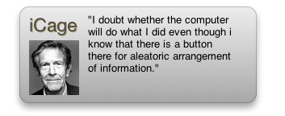

iCage
Daily Quotes by Composer/Artist John Cage

Version 1.2, sp010
By Brian B. James
Released: January 19, 2007
Latest Build: March 22, 2007
.zip Filesize: 172 KB
Mac OS X 10.4 Tiger is required. If you’re using Safari, click the download link. When the widget download is complete, show Dashboard, click the Plus sign to display the Widget Bar and click the widget’s icon in the Widget Bar to open it. If you’re using a browser other than Safari, click the download link. When the widget download is complete, unarchive it and place it in /Library/Widgets/ in your home folder. show Dashboard, click the Plus sign to display the Widget Bar and click the widget’s icon in the Widget Bar to open it.
iCage is Freeware, © 2007 Brian B. James. Some code, © 2005 Apple Computer, Inc.